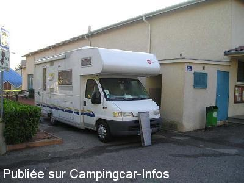

AS = Aire de services uniquement de :
PONTCHARRA SUR TURDINE
(N° 374)
Accès/adresse :
Place Albert Schweitzer
69490 PONTCHARRA SUR TURDINE
69490 PONTCHARRA SUR TURDINE
Latitude : (Nord) 45.87429° Décimaux ou 45° 52′ 27′′
Longitude : (Est) 4.49147° Décimaux ou 4° 29′ 29′′
Tarif : Gratuit
Services :


Tous commerces
Autres informations :
Ouverte toute l'année
Tel : +33(0)474 056 103

Le 10/11/2007 par srt78
de
GUENIN JP
le 18/04/2012 :
cette aire est tres dificile a approcher et pas tres pratique mais elle a le merite d'exister elle est ancienne en cas de probleme aller a L'Arbresle la prochaine ville en direction de Lyon au Super U BONNE ROUTE
cette aire est tres dificile a approcher et pas tres pratique mais elle a le merite d'exister elle est ancienne en cas de probleme aller a L'Arbresle la prochaine ville en direction de Lyon au Super U BONNE ROUTE
de
Max 11
le 08/10/2010 :
Aire de services pas digne de recevoir des camping-cars de 7 mètres de long. Impossible de stationner à 15h, toutes les places occupées , il ne faut pas avoir peur de se faire accrocher le camping-car.
Aire de services pas digne de recevoir des camping-cars de 7 mètres de long. Impossible de stationner à 15h, toutes les places occupées , il ne faut pas avoir peur de se faire accrocher le camping-car.
de
pascal
le 15/06/2010 :
J'ai trouvé ce village très sympa, bon accueil des gens, l'aire est petite mais WC très propres et eau gratuite. Pour faire une halte d'une nuit, je la conseille.
J'ai trouvé ce village très sympa, bon accueil des gens, l'aire est petite mais WC très propres et eau gratuite. Pour faire une halte d'une nuit, je la conseille.
de
Stefan ROCHE
le 10/11/2007 :
Il s'agit d'une aire de stationnement sur la place Albert Schweitzer, la poste longe l'aire de services où se trouve toilettes propres (nettoyées par les services communaux), de l'eau potable pour plein d'eau propre dans les soutes et de lavabos pour la toilettes avec WC (hommes et femmes).
Nous nous y sommes arrêtés lors d'un passage pour une nuit en revenant de la Corse et le calme est dominant la nuit. Le matin, des véhicules viennent y stationner pour accéder aux différents services de la ville.
Ville agréable mais froid en période hivernale (penser au plein des bouteilles de gaz..). CC acceptés par les habitants
Il s'agit d'une aire de stationnement sur la place Albert Schweitzer, la poste longe l'aire de services où se trouve toilettes propres (nettoyées par les services communaux), de l'eau potable pour plein d'eau propre dans les soutes et de lavabos pour la toilettes avec WC (hommes et femmes).
Nous nous y sommes arrêtés lors d'un passage pour une nuit en revenant de la Corse et le calme est dominant la nuit. Le matin, des véhicules viennent y stationner pour accéder aux différents services de la ville.
Ville agréable mais froid en période hivernale (penser au plein des bouteilles de gaz..). CC acceptés par les habitants
de
martine.piccoli
le 11/06/2006 :
Il s'agit de la place de la poste. Pour y accéder tourner au feu à gauche quand on vient de Lyon, à droite quand on vient de Tarare ou Roanne, puis à gauche direction St Romain, puis à 200 m à gauche à nouveau. Parking équipé de toilettes publiques
Il s'agit de la place de la poste. Pour y accéder tourner au feu à gauche quand on vient de Lyon, à droite quand on vient de Tarare ou Roanne, puis à gauche direction St Romain, puis à 200 m à gauche à nouveau. Parking équipé de toilettes publiques